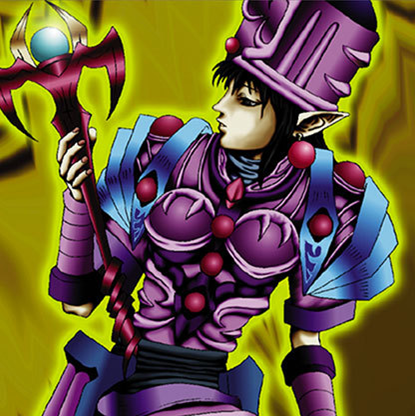

Ancient Elf

STATS
ATK: 1450
DEF: 1200DECK COST
Deck Cost per Card: 27Fusion List (4 Possible Fusions)
- Ancient Elf + Air Marmot of Nefariousness = Nekogal #2
- Ancient Elf + Ancient Jar = Mystical Sand
- Ancient Elf + Battle Ox = Nekogal #2
- Ancient Elf + Pot the Trick = Mystical Sand